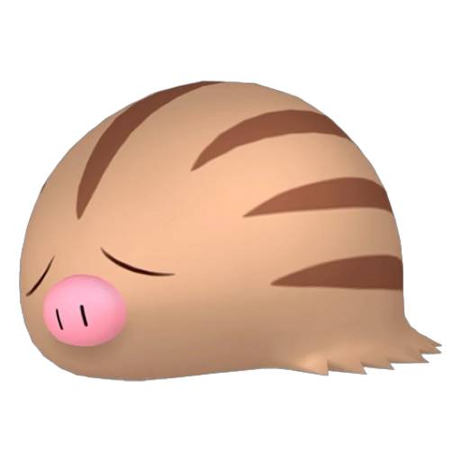

Les Aventures de Marcacrin
Épisode II
Choisissez votre aventure
🏆 Fins débloquées
← Menu
Fins Débloquées
Mode
☰ Menu
Marcacrin
Chaos
✦ Narration
Cliquer pour continuer ▸
Fin débloquée
Fermer
← Menu
Mode Esquimaux
Tape sur Marcacrin le plus vite possible en 30 secondes !
Temps
30
Score
0
Meilleur score :
0

+1
▶ Jouer
0
tapes en 30 secondes
🏆 Nouveau record !
↺ Rejouer
← Menu
✕
✦ Fin débloquée
↺ Rejouer
← Menu principal